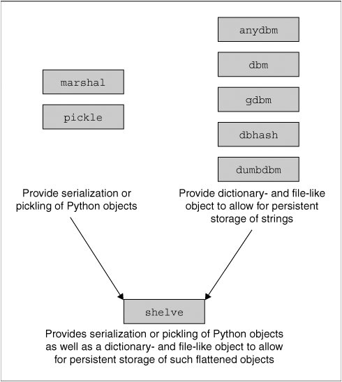

9.9. Persistent Storage ModulesIn many of the exercises in this text, user input is required. After many iterations, it may be somewhat frustrating being required to enter the same data repeatedly. The same may occur if you are entering a significant amount of data for use in the future. This is where it becomes useful to have persistent storage, or a way to archive your data so that you may access them at a later time instead of having to re-enter all of that information. When simple disk files are no longer acceptable and full relational database management systems (RDBMSs) are overkill, simple persistent storage fills the gap. The majority of the persistent storage modules deals with storing strings of data, but there are ways to archive Python objects as well. 9.9.1. pickle and marshal ModulesPython provides a variety of modules that implement minimal persistent storage. One set of modules (marshal and pickle) allows for pickling of Python objects. Pickling is the process whereby objects more complex than primitive types can be converted to a binary set of bytes that can be stored or transmitted across the network, then be converted back to their original object forms. Pickling is also known as flattening, serializing, or marshalling. Another set of modules (dbhash/bsddb, dbm, gdbm, dumbdbm) and their "manager" (anydbm) can provide persistent storage of Python strings only. The last module (shelve) can do both. As we mentioned before, both marshal and pickle can flatten Python objects. These modules do not provide "persistent storage" per se, since they do not provide a namespace for the objects, nor can they provide concurrent write access to persistent objects. What they can do, however, is to pickle Python objects to allow them to be stored or transmitted. Storage, of course, is sequential in nature (you store or transmit objects one after another). The difference between marshal and pickle is that marshal can handle only simple Python objects (numbers, sequences, mapping, and code) while pickle can transform recursive objects, objects that are multi-referenced from different places, and user-defined classes and instances. The pickle module is also available in a turbo version called cPickle, which implements all functionality in C. 9.9.2. DBM-style ModulesThe *db* series of modules writes data in the traditional DBM format. There are a large number of different implementations: dbhash/bsddb, dbm, gdbm, and dumbdbm. If you are particular about any specific DBM module, feel free to use your favorite, but if you are not sure or do not care, the generic anydbm module detects which DBM-compatible modules are installed on your system and uses the "best" one at its disposal. The dumbdbm module is the most limited one, and is the default used if none of the other packages is available. These modules do provide a namespace for your objects, using objects that behave similar to a combination of a dictionary object and a file object. The one limitation of these systems is that they can store only strings. In other words, they do not serialize Python objects. 9.9.3. shelve ModuleFinally, we have a somewhat more complete solution, the shelve module. The shelve module uses the anydbm module to find a suitable DBM module, then uses cPickle to perform the pickling process. The shelve module permits concurrent read access to the database file, but not shared read/write access. This is about as close to persistent storage as you will find in the Python standard library. There may be other external extension modules that implement "true" persistent storage. The diagram in Figure 9-1 shows the relationship between the pickling modules and the persistent storage modules, and how the shelve object appears to be the best of both worlds. Figure 9-1. Python modules for serialization and persistency Core Module: pickle and cPickle |